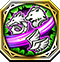
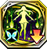

Tyrhelm RS
Resonance Skills obtained from Lost Ragnarok units of the Tyrhelm faction. Can only be use by Special units and Tyrhelm units.
3103813

Almace |
 ティターニアの絶蝶 |
|---|---|
| デュエル時、飛行・竜・獣属性ユニットへのダメージが200%威力となる ※自身が同様の効果のスキルを所持している場合は発動しない | |
3103823

Almace |
 ティターニアの繁栄
ティターニアの繁栄
|
| 「ティルヘルム」所属ユニットが装備時のみ効果発動。デュエル後、相手ユニットの精を１ターンの間、50%下降させる | |
5103813

Almace |
ティターニアの慈愛 |
| アルマス装備時のみ発動。自身のHPが1000、守・精が50、運が20上昇し、騎乗ユニットへのダメージが200%威力となる | |
5103823

Almace |
 姉妹の信頼
姉妹の信頼
|
| 自身を除く、味方ユニット1体のコマンドスキルの使用回数を1回分回復する。さらにHP50%分回復する | |
41038001

Almace |
絶対満腹戦線 |
| 自身の物防が35上昇するが、魔防が20下降する。相手が飛行・竜・騎馬の場合、物防を15%下げて攻撃する | |
|
3104213
Morabeaga |
 ピスカの変幻
ピスカの変幻
|
| 自身のHPが200上昇する。デュエル時、相手が風・光属性の場合、自身に追撃が発生する ※相手が追撃を封じるスキルを所持している場合は発動しない | |
3104223

Morabeaga |
 ピスカの探訪 |
| 「ティルヘルム」所属ユニットが装備時のみ効果発動。デュエル後、相手ユニットの守を１ターンの間、50%下降させる | |
41042001

Morabeaga |
紅蒼氷菓の行進 |
| 1ターンの間、自身を除く周囲3マス以内の全てのアルマスの速・運を100%下降させ、物防・魔防が500上昇する | |
3101423

Tyrhung |
エイレーネの愛情 |
| ティルフィング・リンク・エイレーネ 6周年記念ver.装備時のみ発動。敵ユニットから受けるダメージを2撃まで無効にし、発動時、自身に力が20%上昇する効果を付与する |